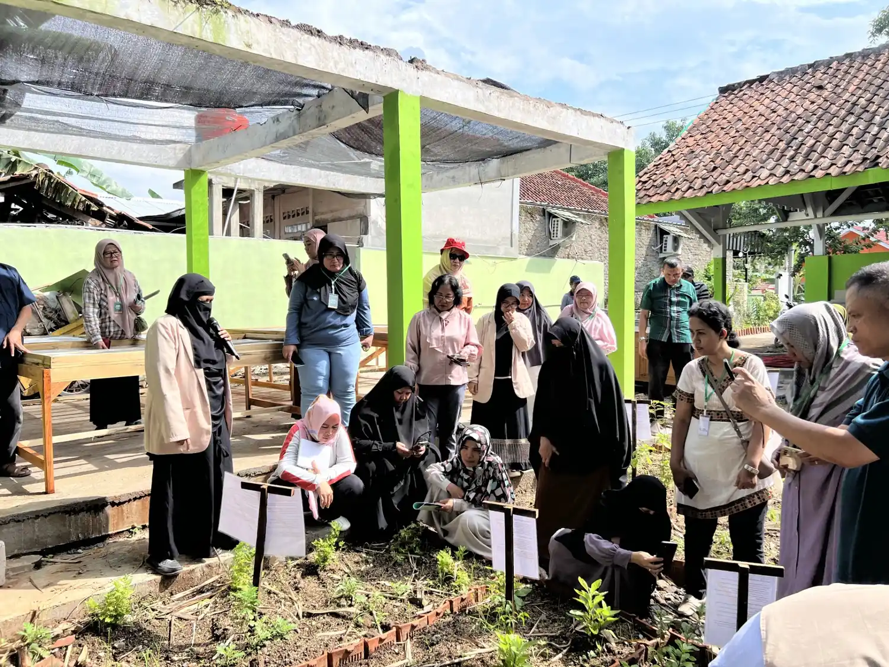
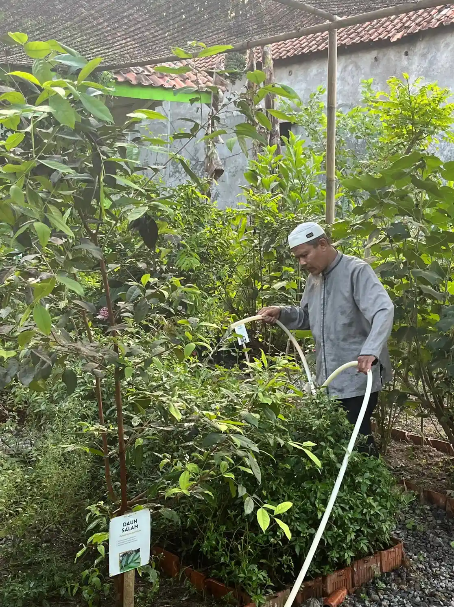
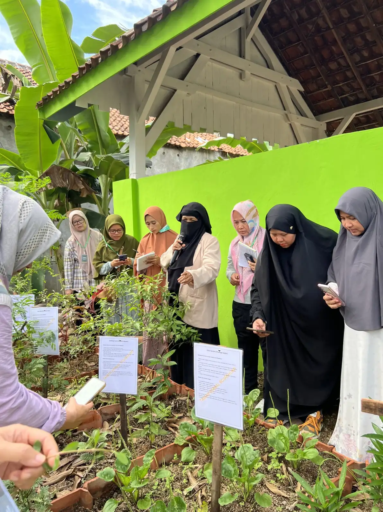
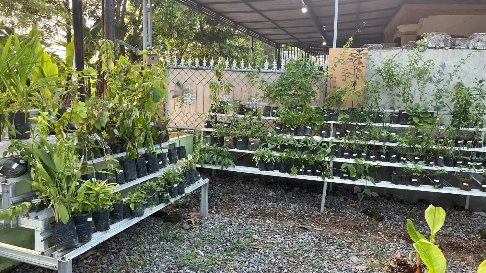

Taman Herbal & Wisata Edukasi Herbal Boja Agro
taman herbal yang menjadi bahan dasar dari setiap jamu di boja agro
Mengolah Herbal Alami dengan Standar Produksi Terpercaya
Boja Agro merupakan ruang eksplorasi herbal yang menghadirkan pengalaman lebih dekat dengan alam, tanaman herbal, dan kekayaan rempah tradisional Indonesia.
Setiap bahan dipilih dengan cermat untuk menjaga karakter alami rempah dan tanaman herbal.
Melalui taman herbal yang dirancang dengan suasana alami dan menenangkan, pengunjung dapat mengenal berbagai jenis tanaman herbal, proses budidaya, hingga manfaat alami yang telah digunakan secara turun-temurun dalam tradisi jamu Nusantara.
Boja Agro juga menjadi ruang relaksasi dan pengalaman immersive yang menghubungkan alam, kesehatan, dan gaya hidup herbal modern dalam satu ekosistem yang harmonis.
Nikmati berbagai area edukasi herbal, suasana alam, dan pengalaman wisata yang dirancang untuk menghadirkan koneksi lebih dekat dengan alam.
Tanaman dan bibit herbal yang kami miliki
Kami merawat tanaman herbal yang berkualitas tinggi dan memiliki manfaat alami untuk kesehatan.

Kunyit
Dikenal dengan warna keemasan khas dan sering digunakan untuk mendukung daya tahan tubuh.

Daun ungu
adalah tanaman herbal yang kaya akan senyawa flavonoid, alkaloid, dan tanin. populer sebagai obat wasir (ambeien) dan sembelit karena memiliki sifat antiinflamasi, pereda nyeri (analgesik), serta efek pencahar alami (laksatif).

Ceker ayam
Ceker ayam memiliki kandungan senyawanya seperti flavonoid dan alkaloid, daun ini berkhasiat sebagai antiradang, penurun panas, pembersih darah, dan antioksidan.

Tapak liman
Tapak liman memiliki kandungan senyawa bioaktif yang dapat meredakan peradangan sendi, mengatasi infeksi bakteri dan jamur, membantu penyembuhan luka, serta meningkatkan sistem kekebalan tubuh.

Som jawa
dimanfaatkan untuk meningkatkan stamina dan daya tahan tubuh, melancarkan produksi ASI, meredakan peradangan, serta memperbaiki kualitas vitalitas dan kesuburan

Bunga telang
kaya akan antioksidan, seperti flavonoid dan antosianin. Ekstrak dari tanaman ini sering digunakan sebagai obat herbal untuk menurunkan demam, meringankan gejala asma, serta meredakan masalah pencernaan seperti diare.

Sirih
dikenal sebagai antiseptik, antibakteri, dan antijamur alami berkat kandungan minyak atsiri, flavonoid, dan tanin. Tanaman herbal ini banyak dimanfaatkan untuk kesehatan mulut, mengatasi masalah kulit, hingga menjaga area kewanitaan.

Kumis kucing
kaya akan antioksidan, minyak asiri, dan kalium. Sifat utamanya sebagai diuretik alami sangat efektif untuk melancarkan buang air kecil, membersihkan saluran kemih, dan mendukung detoksifikasi tubuh.
Manfaat tanaman herbal
Tanaman herbal telah lama dikenal sebagai bagian dari gaya hidup sehat, digunakan secara turun-temurun untuk menjaga daya tahan tubuh dan memberikan manfaat alami bagi kesehatan. Di tengah gaya hidup modern yang serba cepat, kehadiran herbal menjadi pengingat bahwa solusi alami tetap relevan dan dibutuhkan.
Di Bojabhumi, setiap tanaman yang digunakan bukan sekadar bahan, tetapi bagian dari proses menghadirkan minuman yang tidak hanya nikmat, namun juga memberikan nilai lebih bagi tubuh. Mulai dari jahe yang menghangatkan, kunyit yang dikenal dengan manfaatnya, hingga berbagai rempah lainnya yang diracik dengan penuh perhatian.
Melalui pemilihan bahan yang tepat dan proses yang terjaga, kami menghadirkan pengalaman menikmati minuman herbal yang lebih modern tanpa menghilangkan esensi alaminya. Karena bagi kami, kesehatan bisa dimulai dari hal sederhana, termasuk dari apa yang Anda minum setiap hari.
Galeri Boja Agro
Temukan keseruan dan keindahan di balik setiap sudut Boja Agro melalui galeri foto kami, yang menampilkan berbagai momen berharga dan keindahan alam yang kami tawarkan.




Ingin tahu lebih dekat tentang Boja Agro?
Hubungi tim kami untuk berdiskusi tentang tanaman herbal, kunjungan edukasi, bibit tanaman, atau peluang kolaborasi bersama ekosistem Boja Group.